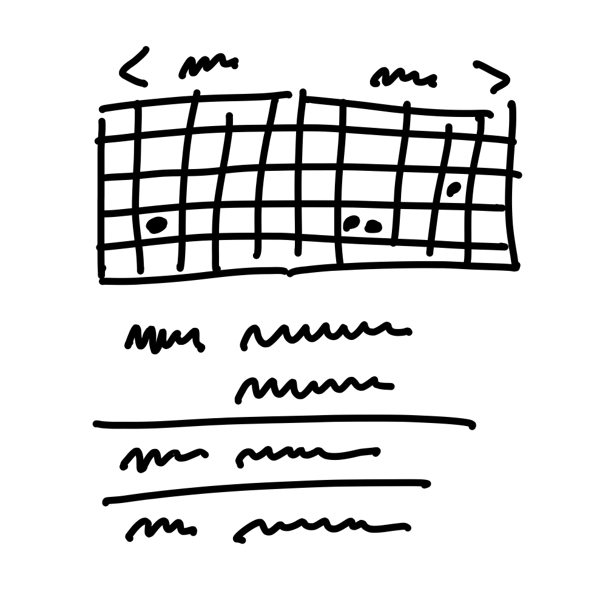
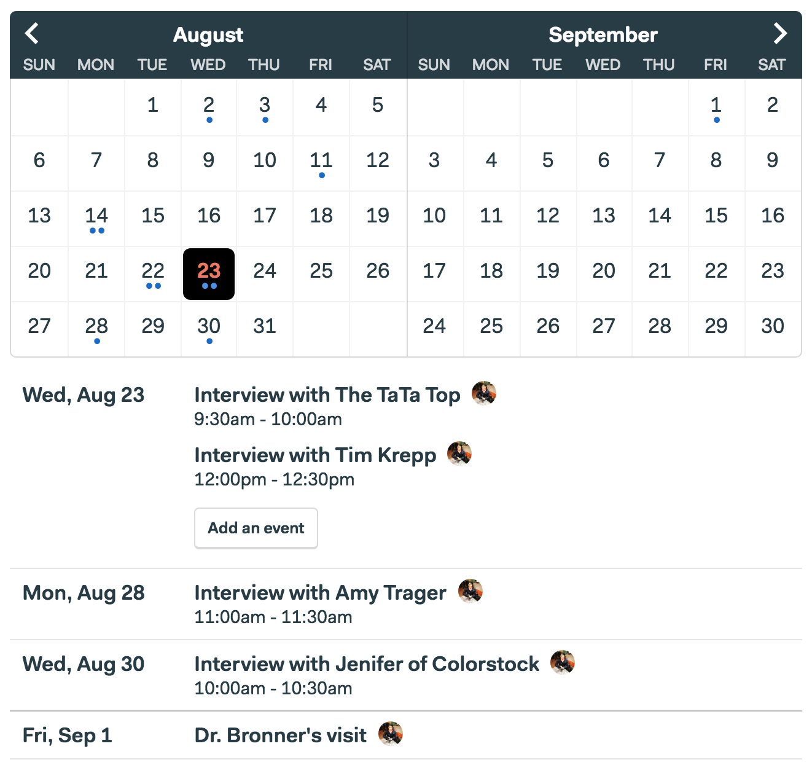
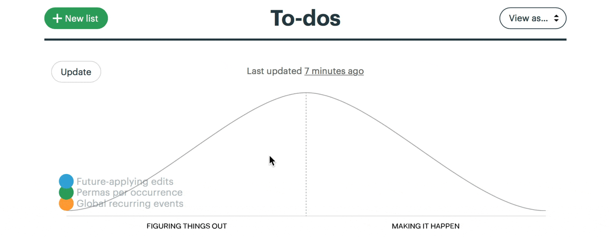
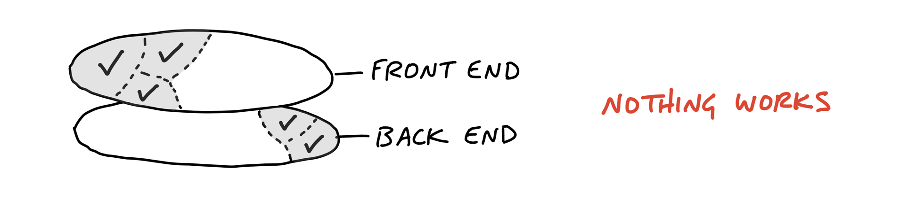
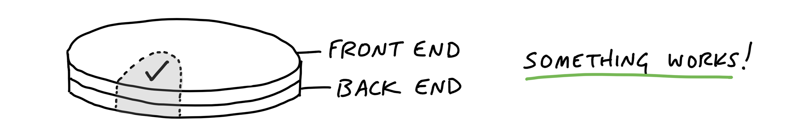
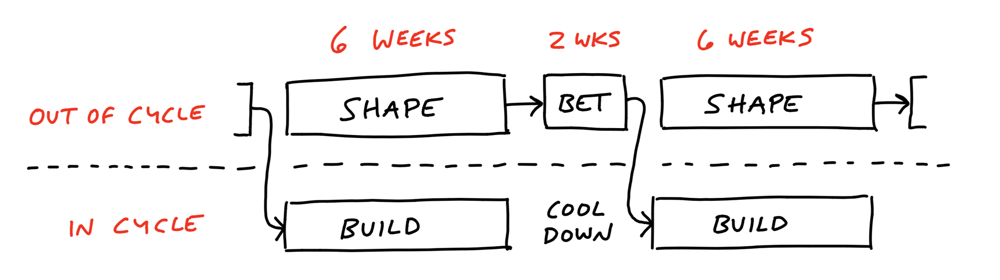
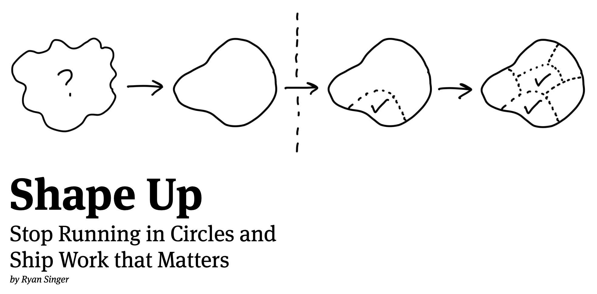

class: center, middle # Shape Up by Basecamp --- # Summary * Six-weeks cycles * Shape up process * Two-weeks cooldown Goal: To target the risk of not shipping on time. Anti-Goal: This isn’t about the risk of building the wrong thing. --- # Problem As software teams grow: * "Projects are never-ending" * PMs can’t find time to think strategically about the product * Founders: "Why can’t we get features out the door like we used to in the early days?" --- # Six-weeks cycle * Long enough to build something meaningful * Short enough you can feel the deadline looming * Goal: Move the product forward in the next six weeks \> "If this project ships after six weeks, we’ll be really happy. We’ll feel our time was well spent." --- # Basecamp as a company * 50-odd people * No full time managers * Their product is built around this method --- # Shape up process \> Shape the work before giving it to a team. * Concretely enough that the teams know what to do * Abstract enough to work out the interesting details themselves * Wireframes are too concrete, words are too abstract * Focus on appetite (instead of estimation): "how much time do we want to spend?" --- # Case study: The Dot Grid Calendar Current state: * Events list with no grid * Customer ask for a calendar * Estimation: six months * Difficulties * Drag 'n' drop * Multi-day events * Drag the edge to change duration * Desktop and mobile interactions * From past versions: only ~10% of customers used them --- # Case study: The Dot Grid Calendar Shaped feature: * Two-month read-only view * Days with events would have a dot for each event * Events list under the calendar * Click on day scrolls on that day --- # Case study: The Dot Grid Calendar <p style="text-align: center;">  </p> --- # Case study: The Dot Grid Calendar <p style="text-align: center;">  </p> --- # Team sizes and members * Give teams full responsibility * Define their own tasks * Change the scope * Build vertical slices --- # Mitigating risk * Solve open questions before commiting to a project * Cap to six weeks (circuit breaker) * Integrate design and programming early --- # Questions during shape up * What are we trying to solve? * Why does it matter? * What counts as success? * Which customers are affected? * What is the cost of doing this instead of something else? --- # No backlog * By default, new raw ideas are rejected without being put in a backlog. * If it's really important it will come up again. --- # Baseline * What customers are doing without the things we're currently building * Compare against that and not the best solution that could be --- # Bet * Commit to a project with no interruptions * With an expectation to finish * Small batch and big batch projects --- # Betting table * Meeting during cooldown * CEO, CTO, senior programmer, product strategist --- # Hill Charts <p style="text-align: center;"> <img src="images/hill-chart.png" alt="hill chart" style="width: 100%; margin-top: 50px;"> </p> --- # Scopes on hill charts <p style="text-align: center;">  </p> --- # Build vertically <p style="text-align: center;"> <img src="images/vertical-front.png" alt="vertical only front" style="width: 100%;">   </p> --- # Six steps * Kick-off * Orient * Scope * Build Vertically (get one piece done) * Report (hill charts) * Ship (scope hammer) --- # Parallel tracks <p style="text-align: center;">  </p> --- # <a href="https://basecamp.com/shapeup" style="color: inherit; text-decoration: none;">basecamp.com/shapeup</a> <p style="text-align: center;"> <a href="https://basecamp.com/shapeup">  </a> </p>